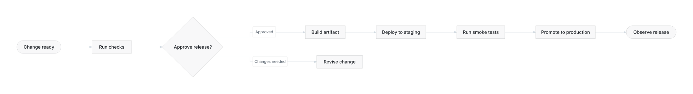
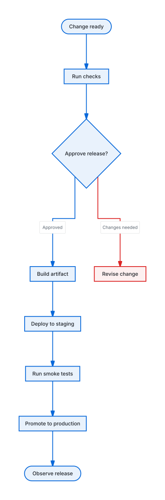
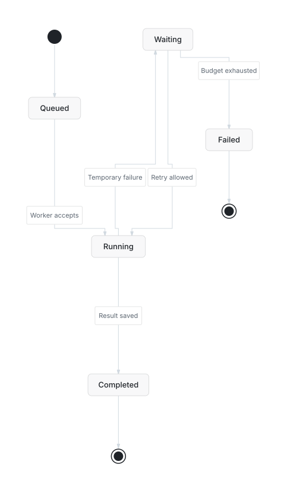

Read the diagram, then check the score.
Four illustrative examples generated by the standalone Beautiflow binary. Compare a workflow, trace a retry, follow a cache miss, and explore a service boundary. Click any diagram for the full-size SVG.
An order platform, at a glance
Customers call the Orders API, which stores orders and queues background work. A worker processes jobs and hands off notifications. The boundary separates customers from platform services.
 Native Mermaid architecture-beta with Lucide icons and explicit ports. Architecture supports rendering and audit, not flowchart polish. The boundary is illustrative, not a verified security control.
Mermaid source · PNG
Native Mermaid architecture-beta with Lucide icons and explicit ports. Architecture supports rendering and audit, not flowchart polish. The boundary is illustrative, not a verified security control.
Mermaid source · PNG
Release workflow
Follow approval into production. Blue emphasizes the primary path; the red revision branch stays visible without dominating it.
Geometry score: 79 → 94. Same nine nodes and eight relationships.
Show the untouched, extra-wide layout

Before: valid, but very wide. The same GitHub Light theme is used in both versions.
After: polish selects a vertical layout; one semantic correction adds emphasis. This suits a document better than a widescreen slide—it remains tall.
Mermaid source · PNG
Job lifecycle
Trace Queued → Running → Completed, then follow Temporary failure into Waiting. Retry allowed must return to Running; Budget exhausted must terminate in Failed.
Geometry score: 97 → 97. A good layout need not move to improve emphasis.
Show the original without semantic emphasis

 The retry cycle is intentional. Zero measured label collisions does not remove the need to read the arrows.
Mermaid source · PNG
The retry cycle is intentional. Zero measured label collisions does not remove the need to read the arrows.
Mermaid source · PNG
Cache hit or database fallback?
Use a sequence diagram when the question is about ordering, not placement. The database is queried only on a cache miss.
 Render-only family. Visually reviewed; no flowchart geometry score or polish claim.
Mermaid source · PNG
Render-only family. Visually reviewed; no flowchart geometry score or polish claim.
Mermaid source · PNG
Test it yourself
At a comfortable reading size: trace every arrow, read every branch label, check that labels hide no unrelated route, and confirm that the primary path is obvious without relying on color alone.
./dist/beautiflow server examples/recipes/visual-quality/release.mmd
./dist/beautiflow audit examples/recipes/visual-quality/release.mmd --json
The server is read-only and reflects saved files. This gallery is static; regenerating an SVG requires refreshing the page. See the reproduction guide for exact commands and limitations.